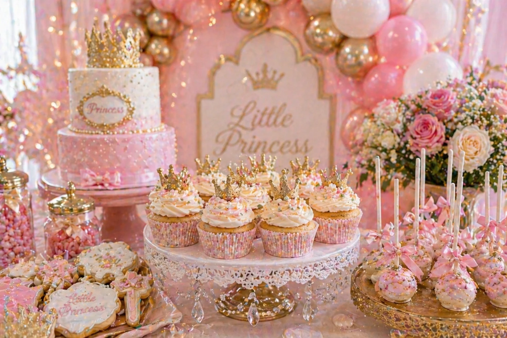
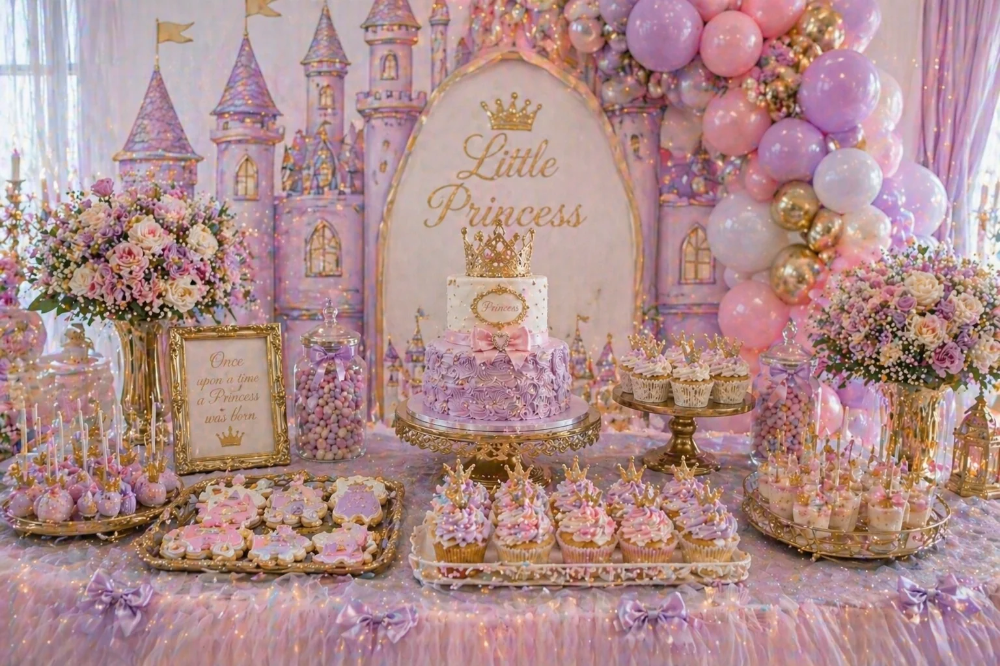

A princess party dessert table is one of the most magical ways to style a children's birthday celebration. With soft balloons, crown details, cupcakes, cake pops, flowers, bows and a beautiful cake centrepiece, the dessert table can become the main photo moment of the party.
At Little Moment Studio, our focus is birthday balloon styling and celebration setups. We do not make cakes or cupcakes ourselves, but we know how important the dessert table is to the overall party look. This guide is focused on princess party inspiration — colour palettes, cake ideas, cupcake ideas and styling details that can work beautifully alongside a balloon display.
If you would like cupcakes or a cake to complement your balloon setup, we are happy to recommend a trusted local cake maker.
Why Princess Dessert Tables Work So Well
Princess party tables are popular because they naturally bring together colour, sparkle and soft detail. When the balloons, cake, cupcakes and flowers all speak the same colour language, the effect is genuinely magical. A well-styled princess dessert table gives the party a clear focal point and creates the kind of backdrop that photographs beautifully.
The best princess tables usually feel soft, pretty and coordinated rather than overcrowded. One cake, twelve to twenty-four cupcakes, cookies, cake pops and a sweet jar or two is usually enough. The goal is a table that looks generous and royal without feeling busy.
| Element | What It Adds |
|---|---|
| Balloon garland | Frames the dessert table, creates height, repeats the colour palette |
| Castle backdrop | Creates a fairytale scene behind the table |
| Cake | Main royal centrepiece |
| Cupcakes | Easy to serve and decorate with crowns and bows |
| Cake pops | Add height and pretty detail |
| Cookies | Great for crowns, castles, dresses and hearts |
| Bows | Add a soft, pretty finish across every element |
| Florals | Make the table feel elegant and finished |
| Gold details | Add a royal touch without heavy colour |
| Pearl details | Make the table feel more luxury |
Princess Party Colour Palettes
Choosing the colour palette first makes the whole table easier to plan. Once you have the colours, you can share them with your balloon stylist, cake maker and florist so every element coordinates naturally. The best princess tables repeat the same palette gently across the balloons, cake, cupcakes, flowers, bows and table decorations.
Classic Princess
Blush pink, ivory, champagne gold. The most popular princess palette — warm, feminine and instantly royal.
Royal Pink & Gold
Pink, pearl white, gold. Bold and bright with a luxurious golden finish.
Lilac Fairytale
Lilac, blush, ivory, soft gold. Softer and dreamier than the classic pink version.
Castle Princess
Pink, lavender, pearl, champagne. A fairytale palette for castle and storybook themes.
Bow Princess
Soft pink, ivory, pearl white, blush. Sweet, delicate and very current.
Luxury Princess
Ivory, champagne, gold, pale pink. Polished and refined, ideal for milestone birthdays.
Garden Princess
Pink, sage, ivory, floral green. A softer, garden-inspired princess look for spring and summer.
Peach Princess
Peach, blush, cream, gold. Warm and unexpected — a beautiful alternative to classic pink.
The key to a coordinated princess table
Share the colour palette with everyone involved before they begin designing. The cake maker, florist and balloon stylist do not need to match each other exactly — they just need to work from the same colour family. When every element speaks the same language, the table feels intentional rather than assembled from separate decisions.
Idea 1: Blush Pink & Gold Princess Table
A blush pink and gold princess table is the most classic look for a princess birthday. It feels elegant, sweet and instantly recognisable as a royal celebration. It photographs beautifully in any lighting and works equally well in a venue or at home.
This style works well with blush pink, ivory and gold chrome balloons in an organic balloon garland, a crown cake topper, pink and ivory cupcakes with gold crown toppers, pearl sprinkles, pink cake pops, gold cake stands, soft roses and satin bows. A fairytale-style backdrop behind the table completes the look and gives guests a beautiful photo moment.
This is a strong choice for a birthday party where you want the table to feel pretty and photo-ready without relying on bright or saturated colour.
Princess party dessert table styled by Little Moment Studio, Kent — blush pink, ivory and gold with crown cake, cupcakes and balloon garland
Idea 2: Princess Cupcakes with Crown Toppers
Cupcakes are perfect for princess parties because they are easy to decorate and simple for children to enjoy. A tray of beautifully piped cupcakes with gold crown toppers can anchor the dessert table and carry the princess theme in every detail.
Good cupcake ideas for a princess table include ivory buttercream with a gold crown topper, blush pink rosettes with pearl sprinkles, bow topper cupcakes, lilac fairytale swirls and two-tone pink and ivory buttercream. Edible glitter, heart toppers and small flower details all add a finishing touch that makes the table feel personal.
| Cupcake Style | Colours |
|---|---|
| Classic crown cupcake | Ivory buttercream, gold crown topper, pink sprinkles |
| Pink princess swirl | Blush pink buttercream, pearl sprinkles |
| Royal gold cupcake | Ivory buttercream, gold stars, crown topper |
| Bow cupcake | Pink and ivory buttercream, fondant bow topper |
| Lilac princess cupcake | Lilac buttercream, pearl sprinkles, gold crown |
| Heart topper cupcake | Blush pink buttercream, fondant heart, gold glitter |
For piping styles and techniques, see our guide to the best piping tips for cupcakes. The Wilton 1M is ideal for tall princess swirls, the 2D for rosettes and softer finishes, and the 104 for ruffled petal effects. For multi-colour buttercream in two-tone swirls, the cling film method makes it easy to load two colours into one piping bag.
For full cupcake design ideas, see our birthday cupcake ideas guide.

Princess party cupcakes with gold crown toppers, blush pink buttercream and pearl sprinkles
Idea 3: Castle-Inspired Princess Table
A castle-inspired dessert table creates a stronger fairytale look. It works well if you want the table to feel like a magical princess scene rather than simply a pink birthday display. This style is especially popular for children who love castles, storybook characters and magical princess stories.
Good elements for this theme include a castle-style backdrop, pink and lilac balloons, a princess cake with a crown topper, castle-shaped cookies, wand cake pops, tulle table fabric and fairy lights. Gold trays, gold cake stands and soft florals worked through the backdrop bring the setting together.

Castle-inspired princess party dessert table with pink and lilac balloons, fairytale backdrop and gold details
Idea 4: Lilac Fairytale Princess
A lilac princess table feels a little different from the classic pink version. It is softer, dreamier and works particularly well with fairytale backdrops, iridescent details and soft fairy lights. This palette is a good choice if you want a princess theme that feels magical and gentle rather than bright and bold.
Good elements include lilac, blush pink and ivory balloons, lilac and pink and purple cake pops, silver or gold star details, white florals, fairy lights and pearl or iridescent table details. The palette of lilac, blush, ivory and pearl creates a look that feels like a storybook illustration brought to life.
Idea 5: Pink Bow Princess
A bow-themed princess table is soft, pretty and very current. Bows work beautifully across every element — cake topper, cupcake fondant details, cookies, ribbons on cake stands and satin bows on balloons — making it one of the most cohesive and easy-to-execute princess themes.
Good elements include a pink balloon garland with ivory balloons and satin bows, a bow cake topper, bow cupcakes, pearl details, pink cake pops, gold trays and soft roses. Lace or tulle table fabric adds texture and reinforces the princess feel without adding strong colour.
| Treat | Bow Detail |
|---|---|
| Cake | Pink ribbon or fondant bow topper |
| Cupcakes | Small fondant bow toppers |
| Cake pops | Tiny bow decoration or pink with bow tag |
| Cookies | Bow-shaped cookies in pink and ivory |
| Macarons | Pink and ivory with gold lustre |
| Sweet jars | Pink sweets with satin bow tags |
Idea 6: Ivory, Pearl & Champagne Royal
An ivory, pearl and champagne princess table feels more luxury and grown-up. It is still completely suitable for children’s birthdays but has a softer, more refined finish. This style works well for older children, milestone birthdays and venue celebrations where the overall aesthetic skews polished rather than bright and playful.
Good elements include pearl white and champagne balloons with ivory cake, a gold crown topper, pearl sprinkles, white roses, glass or crystal cake stands, cream cupcakes, champagne cake pops and delicate bows. Macarons with gold lustre dust add a particularly premium touch. With this palette, gold works best as an accent rather than a base colour — a little goes a long way.
What to Include on the Table
A simple but well-styled princess dessert table does not need to include everything. One birthday cake, twelve to twenty-four cupcakes, cake pops, cookies and macarons or sweet jars is usually enough for most children’s parties. The goal is a table that looks generous and royal without feeling chaotic or overcrowded.
| Treat | Princess Party Idea |
|---|---|
| Cake | Crown cake, castle cake, bow cake, pink and ivory drip cake |
| Cupcakes | Crown toppers, pearl sprinkles, pink swirls, bow fondant |
| Cake pops | Gold crowns, bows, pink sprinkles, wand shapes |
| Cookies | Crowns, castles, princess dresses, hearts, stars, carriages |
| Macarons | Pink, ivory, lilac or gold lustre details |
| Sweet jars | Pink sweets, pearl mints, marshmallows, gold-wrapped chocolates |
| Mini desserts | Layered pink and ivory sweet pots, meringues, donuts with pink icing |
Princess Cake Ideas
The cake is usually the centrepiece of the table. A good princess cake does not need to be complicated — a clean, elegant design with a strong topper often looks better than a heavily decorated cake that competes with everything around it.
Popular princess cake ideas include a crown cake, a castle cake, a pink bow cake, a pearl and gold cake, a floral princess cake, a pink and ivory drip cake and a two-tier princess cake. For a simpler option, a plain ivory or blush cake with a single gold crown topper placed on a gold cake stand looks genuinely elegant and works with any princess palette.
“A crown topper is one of the easiest ways to give any cake the princess look. Share the balloon palette with your cake maker before they begin designing, and the result will feel intentional from every angle.”
Princess Cupcake Piping Ideas
Cupcakes are one of the easiest ways to repeat the princess theme across the table in colourful, personal detail. The piping style, buttercream colour and fondant topper can all be tailored to the specific princess palette.
| Piping Tip | Use for Princess Cupcakes |
|---|---|
| Wilton 1M | Tall princess swirls in blush, pink or lilac |
| Wilton 2D | Rosettes and softer, rounded swirls |
| Wilton 1A | Smooth domes for fondant toppers |
| Wilton 104 | Petals and ruffles for floral princess cupcakes |
| Wilton 352 | Leaves for garden princess cupcakes |
For a full guide to piping tips and techniques, see our article on the best piping tips for cupcakes. For two-tone pink and ivory princess swirls, the cling film method for multi-coloured buttercream gives a clean result with very little effort.
Princess Cookie & Cake Pop Ideas
Cookies and cake pops are ideal for adding small themed details to the table. They help the display feel more complete and give guests something to take away without needing to cut the cake.
Good cookie shapes for a princess table include crowns, castles, princess dresses, hearts, stars, wands, bows and carriages. Decorated with royal icing in the same palette as the balloons and cake, they can be one of the most impressive details on the whole table.
Good cake pop ideas include pink cake pops with gold sprinkles, crown cake pops, pearl cake pops, bow cake pops, lilac and ivory cake pops and gold star cake pops. Displayed on a cake pop stand or in a small jar, they add height and texture to the front of the table.
Matching Balloons, Cake & Cupcakes by Theme
The easiest way to make the whole princess setup feel coordinated is to carry the same colour palette from the balloons through to the cake and cupcakes. The two do not need to match exactly — they just need to use the same colour family so everything feels connected.
| Balloon Palette | Cake & Cupcake Ideas |
|---|---|
| Pink, ivory, gold | Crown cake, pink cupcakes with gold crown toppers, pearl sprinkles |
| Lilac, blush, ivory | Fairytale cake, lilac cupcakes, silver or pearl details |
| Champagne, ivory, blush | Luxury crown cake, cream cupcakes, bow details |
| Pink and pearl white | Bow cake, pearl cupcakes, pink cake pops |
| Pink, gold and floral green | Floral princess cake, rose cupcakes, garden cookies |
| Peach, blush, cream | Peach drip cake, blush cupcakes, gold macarons |
For a detailed guide to pairing cupcakes with balloon displays, see how to match cupcakes with your balloon display.
Princess Balloon Ideas for Dessert Tables
The balloon display is what transforms a dessert table into a full party setup. For a princess party, the balloons should frame the table and reinforce the royal feeling rather than compete with the treats.
- A pink, ivory and gold organic balloon garland behind the table creates an instant princess backdrop
- Gold chrome balloon accents add a royal finish to any pink palette
- Pearl white balloons suit ivory and luxury setups without adding strong colour
- Satin bows tied to balloon clusters reinforce the bow princess theme
- A balloon garland arranged around a castle-style backdrop creates a fairytale scene
- Lilac and blush balloons for a softer, more dreamlike princess display
For more birthday balloon ideas, see our guide to first birthday balloon ideas, or visit our birthday balloon styling page to see packages and availability.
Working with a Local Cake Maker
Once you have chosen the balloon colours and princess theme, sharing that information with your cake maker before they begin designing makes a significant difference to the finished result.
- Can the cake colours match the balloon palette?
- Can they create a crown topper?
- Can they make matching cupcakes with crown or bow toppers?
- Can they add bows, pearls or flowers to the cake and cupcakes?
- Can they make princess cookies or cake pops to complete the table?
- What size cake is right for the number of guests?
- Are any decorations non-edible or supported with sticks or wires?
- Will the cake be delivered or collected, and when?
At Little Moment Studio, we are happy to recommend a trusted local cake maker if you would like cupcakes or a cake to complement your balloon display. Get in touch and we can point you in the right direction.
Planning the Table Layout
Once you have chosen the princess theme, palette and treats, the next step is arranging everything on the table. Height variation, balance and a little negative space are what separate a table that looks styled from one that looks assembled.
We cover the layout side in detail in our full guide: how to style a dessert table for a children’s party. The principles apply directly to princess parties — cake stands at different heights, tallest items at the back, smaller treats at the front, and the colour palette repeated gently across every element.
Planning a Princess Party in Kent?
We design and install beautiful birthday balloon displays across Sittingbourne and Kent. Free consultation, no obligation. We can also recommend a trusted local cake maker to complete the setup.